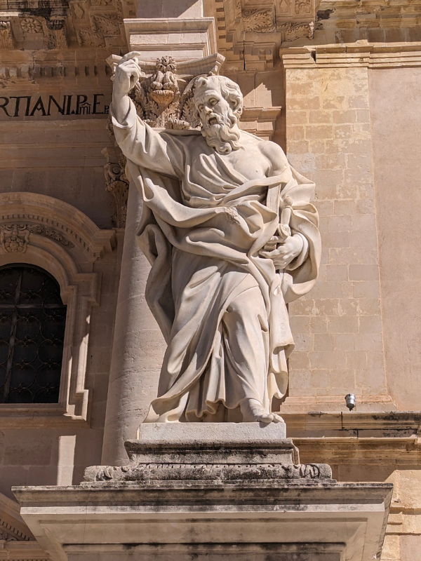
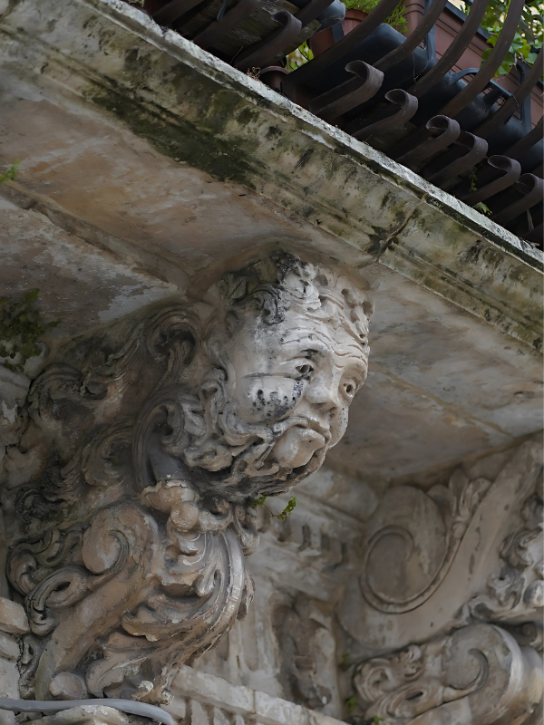
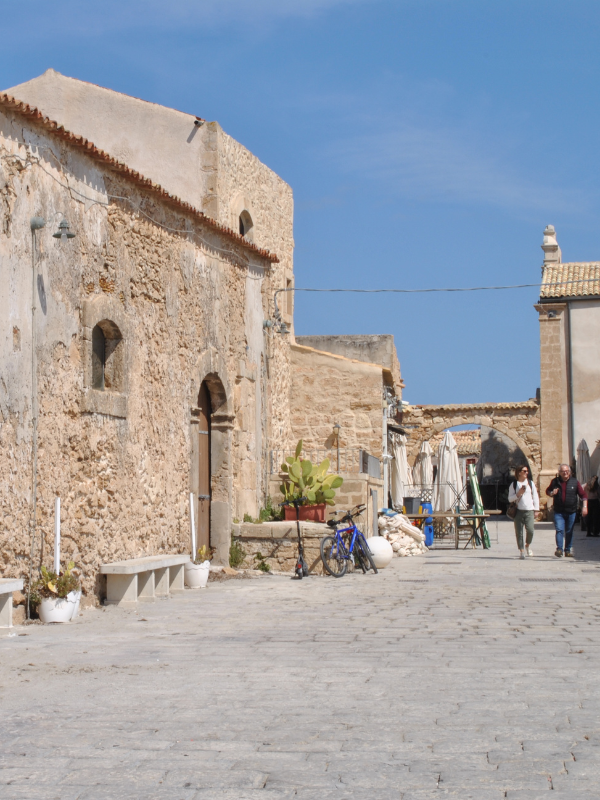
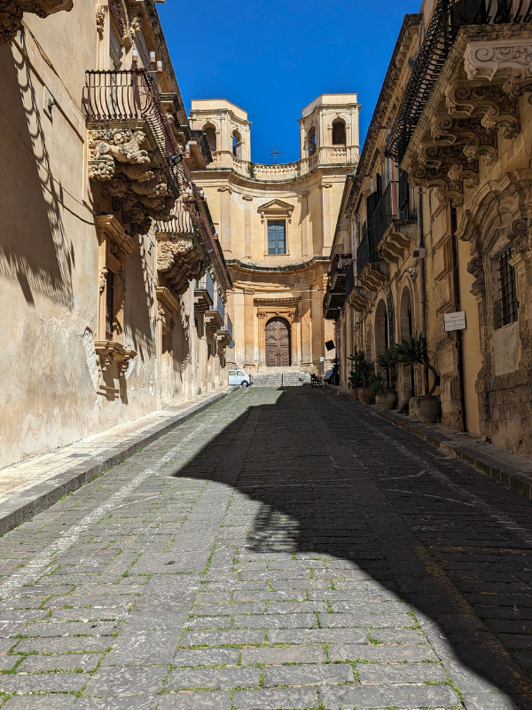

Tra le meraviglie barocche e i paesaggi del Val di Noto.
Scopri la Sicilia sud-orientale attraverso un viaggio tra arte, storia e natura: da Noto a Palazzolo Acreide, passando per Siracusa e Ortigia, fino ai paesaggi di Pantalica. Esplora città barocche, passeggia tra testimonianze del passato e percorri sentieri tra le gole e le necropoli rupestri dei monti Iblei. A Palazzolo Acreide, approfondisci la storia della Basilica di San Sebastiano con una visita guidata o un’audioguida: un’occasione per conoscere il territorio attraverso i suoi monumenti, le sue storie e le sue tradizioni.
Scopri le bellezze del territorio



